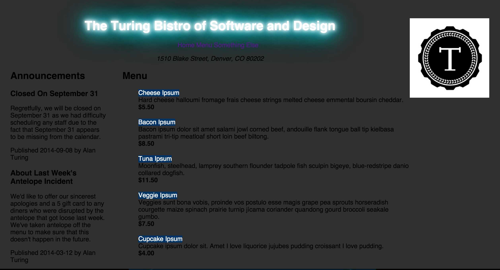

IdeaBox
 The start of this new module is awesome. We get to actually see what we create. This week started off with making a small site for the Turing Bistro and I thought it was tons of fun. I had used html and css before so this was just a refresher and had nothing to do with Ruby. When the time came we did our first Sinatra app IdeaBox it was a great way to do web design and integrate Ruby to create a very cool project that you can enter an idea and it then turns around and stores it and lists them dynamically and be ranked. It was a nice intro and now we move into the realm of full blown websites.